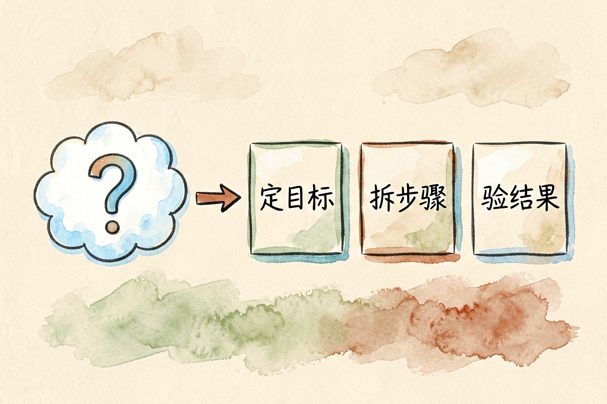
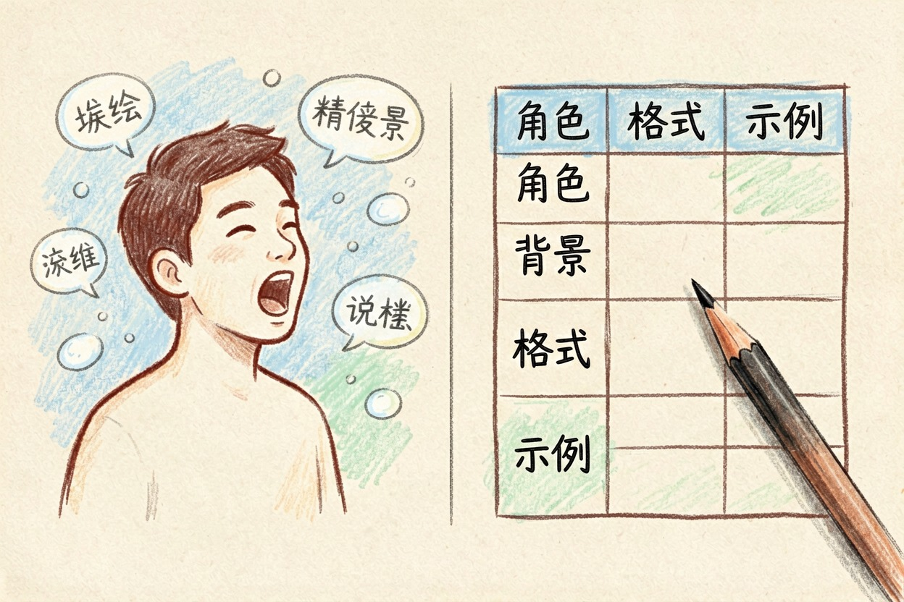
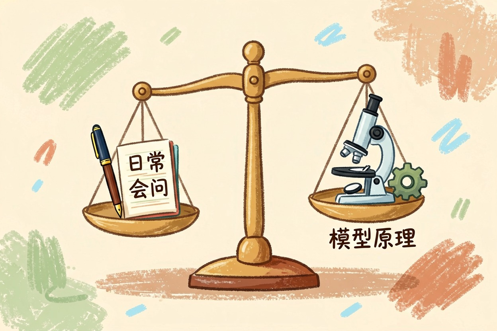
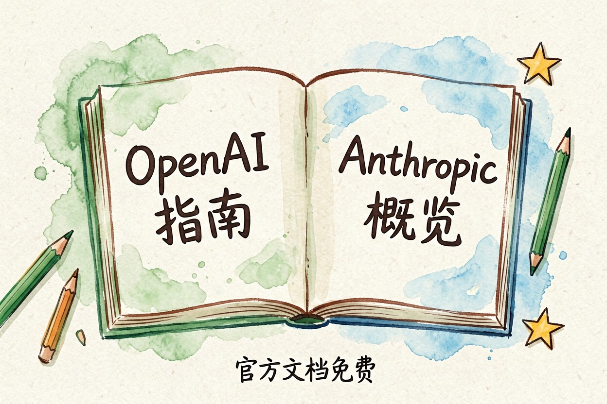

提示词工程是什么？普通人要不要学
提示词工程是让 AI 稳定输出预期结果的方法论。对普通人，把话说清楚、给个例子、要个格式，已经够用，不必专门学。
提示词工程是什么？一句话：它是通过设计指令，让 AI 稳定输出你想要的结果的一套方法。对普通人来说，日常会写清楚、会给例子、会要格式，就够用了，不必专门学，更别为「年薪百万」的课买单。这篇把概念拆开，讲它和写提示词的区别，以及真正值得走的路。
提示词工程是什么：把「好好说话」变成可复现的方法

它做的，是把「不稳定的对话」变成「可复现的输出」。你随口问一句，AI 可能回得不错，也可能跑偏；提示词工程要做的事，就是让「回得不错」变成常态，而不是碰运气。
它不是玄学，跟传统工程思维同源：先定目标，再拆步骤，最后验证结果。只是这里的「工程对象」换成了提示词。理解了这一点，就不会被「提示词工程师年薪百万」的标题唬住。
它和「好好跟 AI 说话」有什么区别

区别在系统性。好好说话是单次表达，提示词工程是一套可复用的结构。角色、背景、格式、示例，这四样凑齐，输出通常就稳了。差别在哪，看一组对照就明白：
差：帮我写个请假邮件。
好：你是一名职场助理。我要请 3 天事假，理由是老家有事。
请帮我写一封给主管的请假邮件，语气客气、说清请假时间和工作交接，结尾请对方批准。差的提问不是不能用，是结果不稳定；好的提问把上下文一次交代清楚，AI 不用猜。这个差别，就是它的起点。这也是提示词工程和「好好说话」的分水岭。
提示词工程师是干嘛的，普通人要不要学

网上说「提示词工程师年薪百万，普通人逆袭」，大多是焦虑营销。真相是：提示词工程师，是少数把指令设计做到专业化的人。普通人日常使用，掌握几条原则就够了：写清楚、给例子、要格式。要不要学，取决于你的目标：普通用户，这已经能覆盖九成场景。
那要不要专门学？普通用户不用。职业级的提示词工程师需要懂模型原理、会做系统化评估，那是少数人的赛道。对绝大多数人来说，把「会问」练好，比报课划算得多。
真想入门，从哪开始

入门不需要花钱。两个官方入口最值得看：OpenAI 官方提示词工程指南{:target="_blank"}和 Anthropic 官方提示词工程概览{:target="_blank"}，都是免费文档，覆盖清晰指令、给示例、复杂任务拆解这些核心方法。
想落地到具体动作，看本站AI 提示词怎么写学方法，用提示词模板公式直接套用；写出来 AI 味太重，可以看AI 味太重怎么改。
一个提醒：别为「速成课」买单
最后说一个现实问题。市面上大量「三天精通提示词工程」「内部提示词库」课程，卖的是焦虑，不是能力。核心方法论在官方文档里免费就能看到，够普通人用很久了。真需要提升，先把下面这段练熟：
请用四段结构写一份周报：
一、本周完成；二、遇到的问题；三、下周计划；四、需要协调的事项。
语气简洁，每段不超过 3 行，先给我一份草稿。提示词工程是什么，现在你心里应该有数了：它是方法，不是魔法，更不是天价课程。别为焦虑营销买单，官方文档免费且够用。从「写清楚」开始，你已经比大多数人强。需要找工具，去AI 工具导航里挑。
本文信息核对于 2026-08-06。AI 产品的价格、免费额度与功能变动频繁，实际以各工具官网当前说明为准。